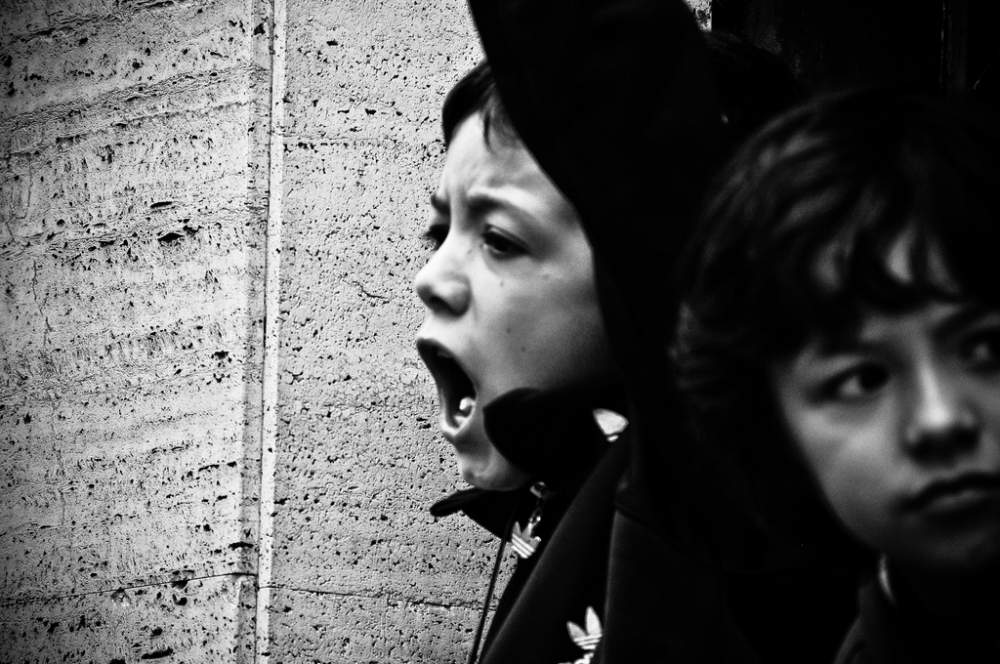
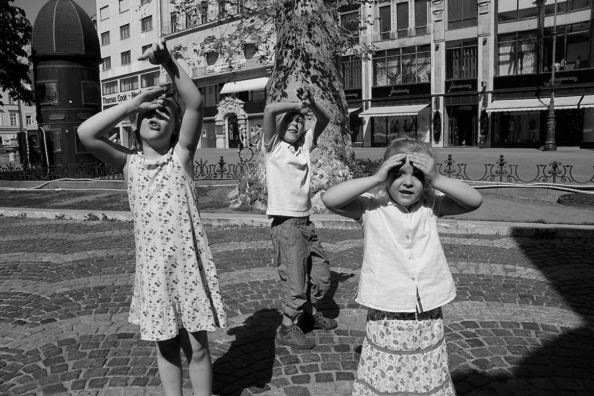

What we're going to look at now is how our feelings can get distorted or amplified. This causes two problems. The first one is obvious; it feels more uncomfortable. The second is that it often steers us to react in ways that are out of alignment with who we really are.

How would you define what an emotion is? Scientists sometimes have trouble defining what emotions are. Emotions are said to form where the mind and body meet, triggered by thoughts and sensations that we may even be unaware of. To feel an emotion can be like a calling. We can choose to act on it or not. These callings are commonly called 'urges'.
The calling from one emotion may be in alignment with what we do. The calling from another may not. Often we fall into the trap of acting on our emotions regardless. Mindfulness helps us acknowledge our emotions so that we have a choice.
Let's explore the basics here. Although there is a little speculation about this because emotions are hard to categorise, scientists generally agree that there are nine natural emotions:
Fear, anger, disgust, sadness, guilt, shock, love, joy and curiosity.
What's interesting is that, as a general rule, only three of these could be categorised as desirable. This means the other six, or 2/3, could be categorised as undesirable, right? Undesirable meaning that you wouldn't choose guilt for the sake of it. You wouldn't choose sadness just to be sad. They're not desirable emotions.
We're now going to take a look at some examples now and see how they natural emotions can become amplified or suppressed and distorted through emotional resistance.
Love
Love is a natural emotion. When expressed and received without condition, restriction, rituals or manipulation, the joy of love is free. If children are brought up in an environment where demonstrations of love are frowned upon, they may have difficulty expressing love as adults.

Curiosity
Curiosity is also a natural emotion; it can propel a toddler to reach just a little bit higher to take the forbidden item off the shelf. When curiosity is punished, the door may close on many life-enhancing experiences later on.
Sadness
Sadness is a natural emotion and it passes if we allow ourselves to fully experience it. If repressed, it can lead to chronic mood problems.
Anger
Anger is normal; it can be the driving force for us to say 'no' to something that does not agree with us. However, anger that is bottled up can cause strong outbursts of rage.
All wars stem from the (dis)comforts of the body. - Plato
This quote by Plato is worth considering. It’s how we manage some of our normal emotions that cause arguments, violence and battles between individuals, cultures and nations.
Let’s take a look at one more human emotion to highlight this.
Fear
Fear is normal. It provides a sense of caution needed for our survival. However…
To be unwilling to experience fear causes resistance which distorts it.
In fact, being unwilling to experience any of our feelings causes resistance. But your experience is going to be your friend here. Maybe it will resonate with what I’m saying, maybe not.Let's use an example.
Imagine Cuthbert has a fear of dogs. (Sorry, that name just randomly popped into my head. It's a fictional name from a comic book I read as a kid! The more I say it, the more I'm getting into it). Cuthbert does all the right things (as far as his mind is concerned) to avoid any possible experience with dogs. This involves not going to the houses of good friends, avoiding walks in the park which he enjoys, and a range of other steps to make sure he doesn't meet any dogs.
Do you think Cuthbert's fear will diminish from his actions in avoiding dogs at all costs?
What does your experience of feeling anxious tell you about what Cuthbert fears?
It's likely to stick around, or maybe get even worse, right?